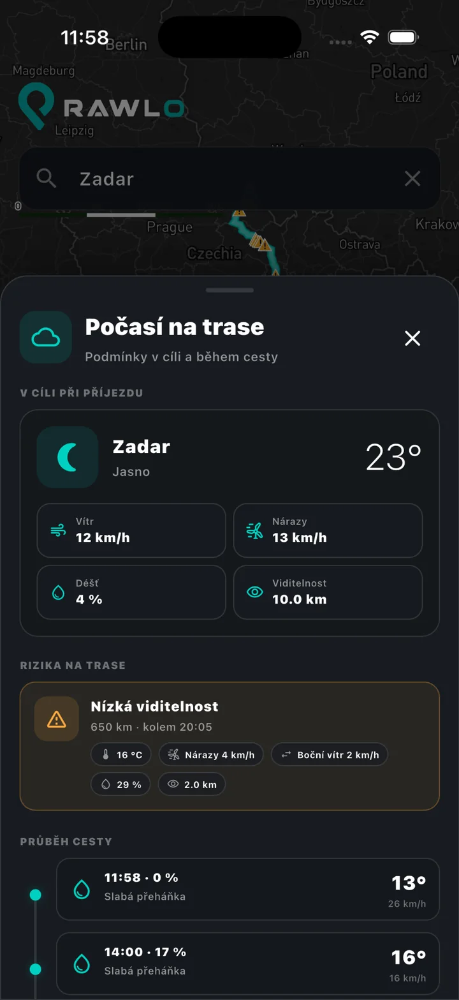
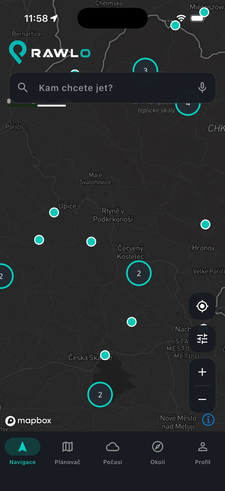
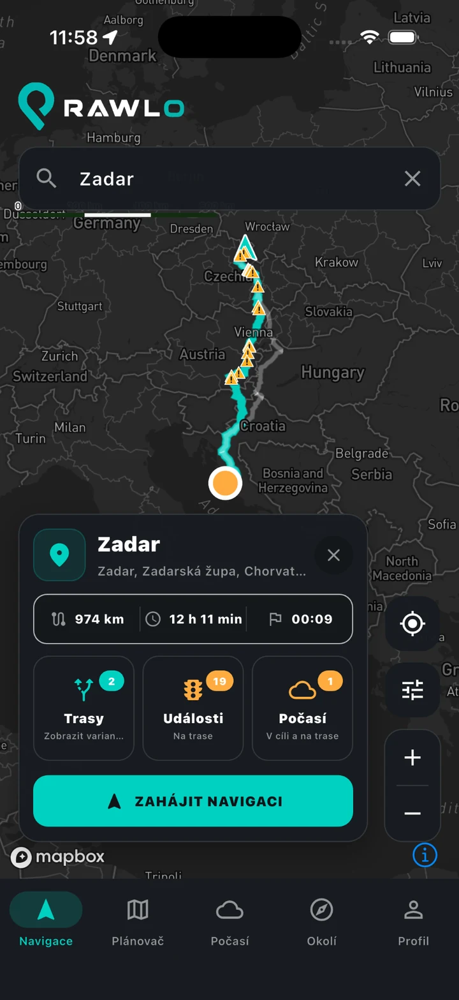
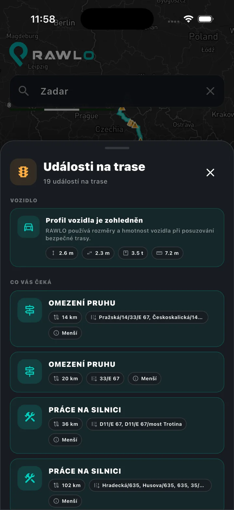
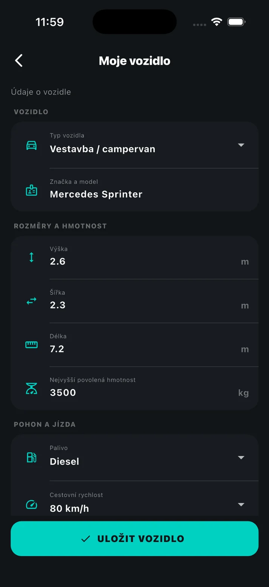

Doprava podle rozměrů camperu
Práce na silnici, uzavírky a omezení vyhodnocujeme podle rozměrů a hmotnosti vašeho vozidla, takže dostáváte upozornění relevantní právě pro váš camper.
Plánujte spolu. Jeďte bezpečněji. Objevujte víc.
Naplánujte celou cestu, sdílejte ji se spolucestujícími, navigujte podle parametrů vozidla, hledejte camper místa a sledujte počasí přímo na trase.


Výšku, šířku, délku a hmotnost nastavíte jednou. RAWLO profil vozidla používá při kontrole tras a upozorní na omezení důležitá pro velký camper.

Práce na silnici, uzavírky a omezení vyhodnocujeme podle rozměrů a hmotnosti vašeho vozidla, takže dostáváte upozornění relevantní právě pro váš camper.
Nastavíte maximální cestovní rychlost vozidla. RAWLO podle ní průběžně přepočítává dobu jízdy i čas příjezdu a nepočítá s rychlostí běžného osobního auta.
RAWLO sleduje počasí po celé trase a upozorní na rizikové podmínky včetně bouřek, nízké viditelnosti, silných nárazů a bočního větru důležitého pro vysoká vozidla.
Vytvořte vícedenní cestu a pozvěte partnerku, rodinu nebo přátele. Nastavte jim právo jen prohlížet nebo také upravovat, aby každý mohl přidávat zastávky, vybírat kempy a společně tvořit itinerář.
Později mohou být inspirací i veřejné cesty: zkopírujete sdílený itinerář a upravíte si ho pro vlastní camper.
RAWLO propojí předpověď s trasou a ETA. Uvidíte podmínky v cíli i po cestě a upozornění na vítr, bouřky nebo další rizika před vámi.
Kempy, stellplatzy a servisní místa s praktickými údaji o vodě, elektřině, WC, sprchách, výlevce, Wi-Fi, psech, sezónnosti, cenách a možnostech rezervace.
Omezení uvidíte ještě před odjezdem a za jízdy dostanete relevantní upozornění na práce na silnici, dopravu, pevné radary, úseková měření a nebezpečné podmínky.

RAWLO je navrženo tak, aby postupně spojilo praktické služby, které dnes hledáte v několika aplikacích a webech.
Ukládejte vozidla, oblíbená místa, fotografie, hodnocení, naplánované i absolvované cesty a cesty sdílené s ostatními.

RAWLO stavíme nad celoevropskými daty a vícejazyčným základem — ne jako lokální aplikaci, která se až později překládá.
Tyto obrazovky pocházejí z aplikace, kterou aktivně vyvíjíme. Rozhraní i jednotlivé funkce se budou do spuštění dál vyvíjet.




Ne. Navigace je zásadní část, ale RAWLO je navrženo pro celou cestu camperem: plánování, spolupráci, místa, počasí, cestovní služby i historii cest.
Ano. Společné plánování je jeden z hlavních pilířů RAWLO, ne pozdější doplněk.
Primárně pro obytná auta, campervany a karavany, kde jsou důležité rozměry, hmotnost a omezení na silnici.
Ne nutně. Některé integrace a komunitní funkce jsou stále ve vývoji. Web popisuje směr produktu, ale netvrdí, že nedokončené partnerské služby už fungují.
RAWLO vzniká jako jedno evropské místo pro cestování camperem.
“What about adding one night by the lake?”